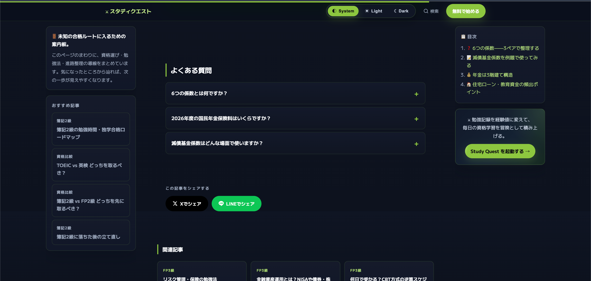
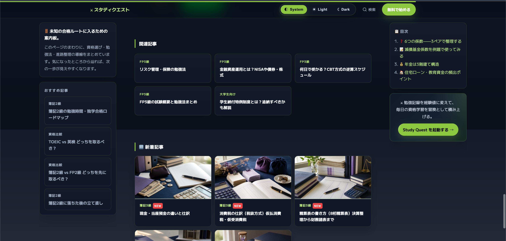

ARTICLE UX / FAQ
02 / 05

SCROLL, READ, ACT
読ませるだけで
終わらせ
ない。
答えが欲しい瞬間に、迷わず触れられる。
記事の流れを止めないFAQの設計。
＋
押せることが、先に伝わる
FIELD NOTE
記事の階層・余白・開閉UIを
ひとつの読書体験として設計。
CASE STUDY / STUDY QUEST — ARTICLE EXPERIENCE DESIGN
ARTICLE UX / RELATED FLOW
03 / 05

NEXT ACTION DESIGN
一読で終わらせない。
次の一歩
を置く。
関連記事を、ただの一覧にしない。
読者が次に知りたいことへつながる導線へ。
↗
カードは「次の入口」になる
FIELD NOTE
カテゴリー・関連記事・CTAを
読後の流れとして再配置。
CASE STUDY / STUDY QUEST — ARTICLE EXPERIENCE DESIGN